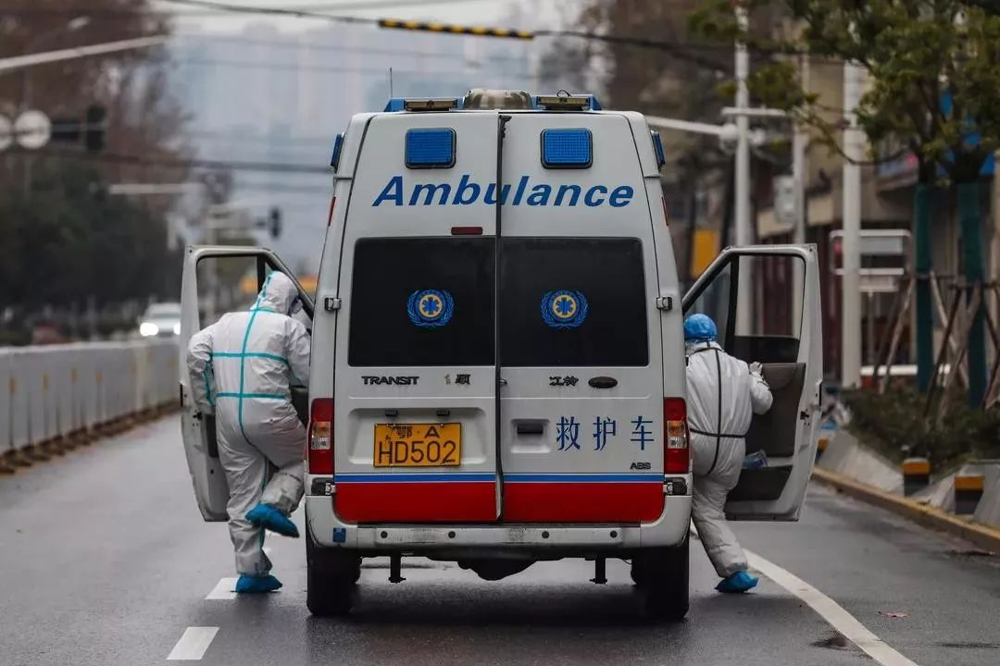
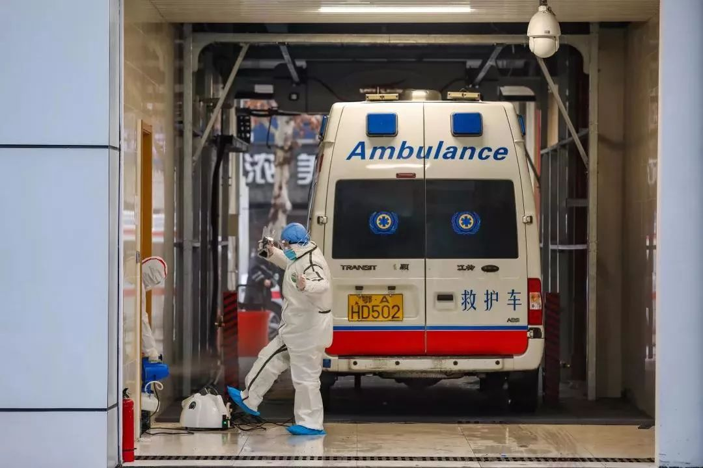

120一线护士：拉着病人却送不进医院丨武汉肺炎亲历–专题-中国经营网
原文链接 备份链接 120一线护士：拉着病人却送不进医院丨武汉肺炎亲历 2020-01-25 21:10 作者：晏耀斌 来源：中国经营网 本报记者 晏耀斌 武汉报道 1月25日，大年初一，护士高琴（化名）一早就随着120出诊了，她在武汉一 …
武汉交通管制后，路面上都是120的车子不停地跑，极少有私家车及的士 （摄影：远征、高星）
武汉从没有如此空旷，市民们避居在家，只有医院人口密集。
疫情还在扩散。
根据湖北卫健委的数据，1月29日0时-24时，湖北省新增新型冠状病毒感染的肺炎病例1032例，武汉市356例。接连数日，医护人员奋战在一线。
一线，不只在医院，也在路上。
武汉路上的私家车很少了，但是救护车几乎全部出动。救护车上标配5人：医生1名，护士1名，担架工2名，以及司机1名。他们构成一个急救单元。车顶的蓝灯交织闪烁，在城中昼夜不停。
“现在的120，相当于一辆的士”，王燕说。
她是武汉120急救中心的一名护士。在交通管制后，她见到路面上的，都是120的车子不停地跑，极少有私家车，更打不到的士。“目前就是我们，要把所有病人送去医院，（去医院）都靠我们了”。
他们已经很累，但他们很难停下来。

现在，“整家、整家地感染”
王燕坚持了好几天，从早8点到第二天的早8点，24小时的三班倒节奏，“我们的工作严重超时了”。
她最忙的一天是1月26日，要把某医院几位病人转出去，包括ICU中的5位病人。她在中午两三点钟接到任务，忙到了凌晨两点，一直没休息，吃饭、喝水的时间都没有。
太多人打120求助，导致任务量暴增。武汉120急救中心的一名司机王刚说，他们日常的出车量是一天八九趟，但在近段时间，出车量平均在每天十五六趟，有一个班甚至出了19趟。
一路飞驰的救护车 （摄影：远征、高星）
救护车出一趟，需要一小时左右。王刚说，正常情况是，病人或家属联系好了医院，120将他们送过去。如果他们没有联系医院，120一般以就近送诊的原则，将发热病人送到定点医院。
尽管路况畅通，但救护车出一趟，都要开十几、二十公里，耗费的时间不短。王刚说，因为24小时工作制，他们基本没有休息时间，“大家都要持续工作十几个小时，有时候18、19个小时”。
一天的时间，都在路上榨尽，他们也只能强撑着。担架工张国告诉《南风窗》记者：“人都疲倦透了，人在车上，一靠着就睡着了”。

武汉市第四医院的一个急救班组，护士张静和司机老胡，两个人一台车，12小时一个班 （摄影：远征、高星）
但在当前，武汉的医院床位严重不足，救护车有时还要“绕圈”。王刚和张国说，遇到没有床位不能收治的，他们会给家属做工作，送到下一家医院去，基本上多跑一趟就行。
然而还有特殊情况。王燕说，有时找不到有床位的医院，他们就一直在不停辗转，“绕圈”很多趟，花好几个小时。他们有一个120网络平台，“看看其他的同志，说可以往哪儿送。我们尽量把病人送到有床位的地方去”。
现实的情况严峻，王燕面对的是，“打120的人很多很多，我们也不知道送哪儿去”。她说：“我们看到了很多病人，但医院都没有床位了，有的病人就在家里死掉了。我们心里也在流泪。”

医务人员正在转移患者
医疗资源的紧张，促发了一些医患之间的矛盾。张国说，他在医院里见到的，叫的、哭的病人和家属都有，有的甚至跟医生吵架，“谁都想先救自己”。
救护车也会遇到类似的病人。1月28日，王燕去转运一位病人，是个70岁左右的男性，他发高烧，意识不太清楚，但他执意要去七院。
很多人不知道，120并不等于医院，他们只是负责转运病人。王燕告诉老人，七院的床位满了。但老人说：“那我要你们120干嘛呢？”
老人有女儿和女婿在陪护，双方僵持不下，“我们劝他，说了半天，但他们不听”。王燕说，老人的女儿拿出手机，说：“医院的事，就你们120联系的啊。要不然我录视频，发到网上去曝光你们”。
无奈之下，王燕所在的救护车，将他们送到了七院。但七院的急诊科人员说，七院没有床位了，连急诊科都没有床位了，实在是求也没用，如今是两个人共用一台呼吸机。
老人在担架上拉着不放手，女儿女婿跟各处医院打电话，但都没有床位。王燕继续劝他们，说还有很多病人需要120。最终，这一家人听从安排，去了下家医院。王燕说，这一趟，在医院的劝导工作，起码用了三四十分钟时间。
虽然耽误了时间，但王燕说：“老人的病状严重，在医院很多人围观。我们很同情他们，也理解他们”，但是，“武汉这么多医院都是住满了人，我们现在也是很无能为力”。

1月28日，武汉协和医院感染性疾病科，正在一线奋战的医护人员
张国也遇到过不配合的病人，对方是一位老人和他十几岁的孙子。老人病况严重，但孙子只是发低烧。按照规定，应该把孙子一起送到医院，“但他怕在医院被传染，家属也反对送他去”。说了半天，还是没用，只能罢了。
然而到现在，家庭之间的互相传染，乃至出现“一家人都是疑似病例”，明显有增多的趋势。多名一线人员向《南风窗》记者证实了这一点。
张国在一线的体会是，在医院里抢号的人少了，但以前是一个又一个病人，现在是以家庭为单位，“整家、整家地感染，一个家里起码两个，甚至还有更多的”。他说，1月28日又送了十几趟，起码有一半是“整家”。
王刚和王燕的体会也是一样。王刚说，在1月28日，接到报警后，他们前往汉口的一个三口之家。因为床位很少，他们此前居住在家，终于等到了床位，王刚就问他们，哪个是病人？没想到，三人都是。
“我们救护车上一车的人，都愣了一下”，王刚说。

“医务同志病倒了”
救护车上，见证了太多不幸。王刚记得，他在汉口接送的一对花甲老人，走路都很难了。老太太已经确诊，但是找不到医院收治。王刚将他们送到汉口医院，按理医院是不能推的，“但他们有没有找到床位，我也不能知道了”。
现实不容盲目的乐观。医院满了，病人一般只在门诊打个针，没有办法住院。“一人一个隔离房间”的目标，还远没有实现。
王刚对花甲老人的记忆很深，是因为老太太的病况严重，而老头在一旁着急大哭。他担心老伴的身体，怕医院没有床位，“住不进去就是要命的”。同时，他又害怕让小区的人知道，急得不行。
目前形势下，出现了典型症状，被外界知道以后，会被采取严格的防护措施。它也导致了一定的精神压力。
王刚就遇到过故意隐瞒症状的病人。“我们去接病人，有些人不愿意说清楚，好多人就不说自己是发烧的，结果送到了医院急诊科，他才对医生说发烧了”。王刚说，他只能将这种心理理解为，“不重视自己的生命”。

张静及同事们护送患者进入医院大楼 （摄影：远征、高星）
实际上，有所隐瞒的病人，还危害到救护车上的医护人员。救护车人员出车时，根据警情电话中的病人类型，有不同的标准。有典型症状的，他们严装出发。如果是一般病人，标准就低些。
另外，张国介绍说，如果是发烧病人，他们会先给病人带好口罩。不难发现，如果病人隐瞒症状，会让医务人员的防护不足。同时自身的防护不足，令一整个救护车成为高危环境。
为了应对，目前的各救护车已经配备了红外线体温计。
然而，还是有救护车上的医务人员“倒了”。王燕说，她所在的医院院区，“现在好多医生、护士都倒了。我们院要从二线的分院调人，把一些精神科的医生，社区医院的护士，抽调到一线来”。
仅她知道的，武汉120急救中心里，有两名司机已经“倒了”。他们在1月28日晚6点时发高烧，目前正在医院隔离治疗。
救护车奔赴之地，是“一线中的一线”，病人不确定性很大，但防护措施尚有弊病。王刚说，在最忙的时候，他们顾不上一些环节。比如消毒，按照规定，救护车回来后，要进行至少40分钟的消毒，最好的则是60分钟。
但是，王刚形容，在疫情开始爆发时，“医院的人进进出出，车水马龙似的”。同时还有大量病人在家，需要转送医院。后来，交通管制了，救护车成为几乎唯一的途径。他们根本接不过来。

呼救铃响起，两位医护搭档再次启程 （摄影：远征、高星）
“在车上的病人，有呕吐的，有咳嗽的。但是到了消毒环节，有时才二三十分钟，120就催着赶紧出车”，王刚说。
他们直面大量的病人，消毒环节不到位的话，救护车可能成为一辆传播病毒的“毒车”。同时，医务人员在24小时的工作制中，体力透支严重。身处这样的环境，隐患极大。
现在，救护车人员中已有感染，王燕不能不担心，她的家属尤其如此。“亲戚、爱人，每天都在嘱咐我，千万要小心。他们知道我是性格强硬的人，不会临阵退缩，只能言语关心我。我都回复说，我知道，我知道”。

“救命服”仍然不够
1月29日，王燕终于告别了24小时工作制。“现在很缺医务人员，如果我们的人倒了，就不再好找了。站长也担心我们”。她所在医院的两个院区，都有医护人员倒下了。现在，站长将两个站点，合并为一个站点。
合并后，王燕的工作节奏，变成18小时四班倒，相对宽裕了些。同时，为了应对随时有人倒下，另外备着一队人员。“留着一个班的人，不论是医生、护士、司机，还是担架员，总要有人顶上”。

武汉市急救中心某急救站工作人员合照 图源澎湃新闻
此外，消毒环节也在改善。王燕对站长提意见：“无论如何，一小时的消毒时间一定要保障”。
但是，压力也在变大，将救护过程规范后，也意味着运输能力降低。正在透支边缘的医务人员，无法迅速完成本就艰难的工作量。另一名担架员吴强说：“关键是武汉现在没车了，只能叫120。病重也好，病轻也好，都需要救护车”。
与此同时，防护物资依然告急。
救护车人员，对防护物资的需求巨大。和医院不同，他们每一次出车，都要定不同的标准。接送发热病人是一套，接送其他病人是另一套。如果混穿，反而可能传染。
也就是说，理想状态下，他们应该出一趟、换一套，但现实中远远不行。张国说，他们一开始时，面罩和护目镜都没有。直到现在，资源依然紧张，他将差的口罩一次性使用后扔掉，但对好的口罩，则要留着消毒，重复使用。
防护服就更加稀缺，它是连体式的，一旦脱下来就不能使用。张国穿着它，在老式小区爬楼梯、抬病人，一趟下来，里头湿透。但他不可以撕开，因为它可能是这天的最后一件。
“知道它不多，千万别搞破了”，王刚想到的办法，是将防护服撕开一角，小心翼翼地将它脱下，送去消毒。直到下次出车继续穿。

在武汉市急救中心的消毒点为车辆和自己消毒完毕后，他们还要时刻准备着，去迎接下一场战斗（摄影：远征、高星）
规范使用防护物资，反而成为一种奢望。“不够、不够”，王燕说。他们现在两个班子，都在设备科领东西，每天的防护服固定有30套。远远不够，“我们接触的都是重症病人啊，那就是我们的救命服，但都不够”。
人也不够，物也不够，但还有很多病人在城中家中，他们不能不出发。他们用一些小技巧，以及精神力量顶着。在路上，来回奔驰，一趟又一趟。
能顶多久？王燕没想过，她说：“我们没有一个同志退缩，除了病倒的同事，大家都冲锋陷阵在一线。”
（王燕、吴强、张国、王刚为化名）
原文链接 备份链接 120一线护士：拉着病人却送不进医院丨武汉肺炎亲历 2020-01-25 21:10 作者：晏耀斌 来源：中国经营网 本报记者 晏耀斌 武汉报道 1月25日，大年初一，护士高琴（化名）一早就随着120出诊了，她在武汉一 …
原文链接 备份链接 每一次维持生命的出行，都充满了未知。 文 | 冯洁、高逸佳、谢婵 编辑 | 小豆 元元已经在汉阳中医院连续站了八个多小时。除了他，1月28日当晚，还有将近20名尿毒症患者聚集在汉阳中医院，他们只戴了口罩，没有别的防护。 …
原文链接 备份链接 陈德昌说，金银潭医院的重症病人情况比较严重。在他工作的病房里，29个病人有16个都上了呼吸机，同时面临物资短缺的难题。当他们作为上海医疗队进驻时，原有医护人员已连续工作近一个月了。这次出征，比想象中要艰苦。 57岁的陈 …
原文链接 备份链接 ********** *****那天夜里，从晚上七点，至次日上午八点，她连续接诊200余位输液留观的病人，装备只有一次性外科口罩、帽子、白大褂和手套。**********接诊区患者爆满，病房里床位紧张，设备缺少、防护不 …
原文链接 备份链接 记者/魏晓涵 实习记者/陈威敬 编辑/刘汨 宋建华 孝感市第一人民医院的医生拆下文件袋作为保护面罩 年初三下午5点，王隆和同事在湖北襄阳去往河南新乡的路上，已经连续开了7个小时车。目的地有一家防护服的生产厂，称可以为他 …